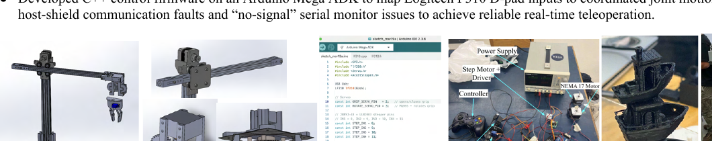

01 · ROBOTICS
2025–2026
Ultra-Precise Remote-Controlled Robotic Crane
A 5-DOF manipulator combining custom SolidWorks components, 3D printing, motor-control electronics, Arduino firmware, and real-time controller input.
±5 mmpositional accuracy
51 cmreach
5 DOFmotion system